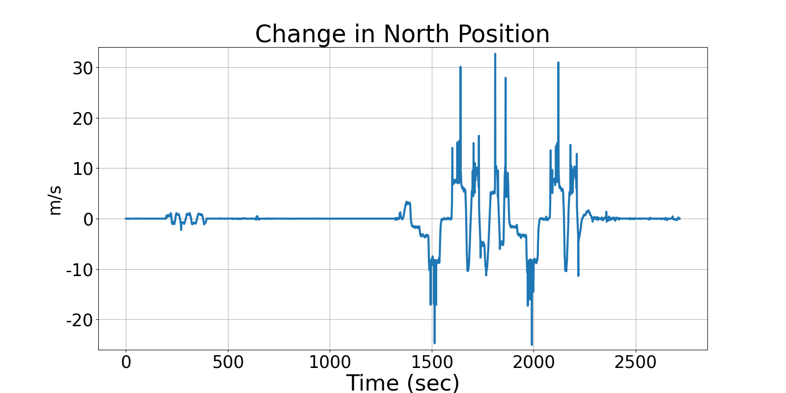
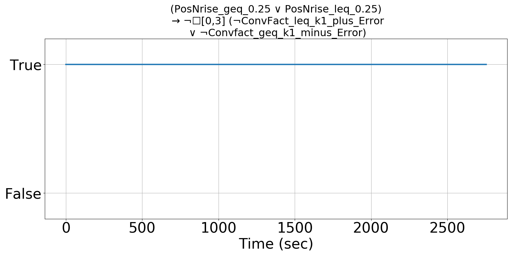
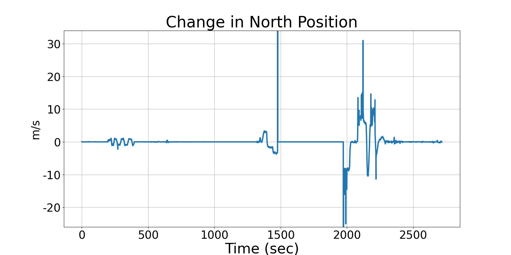
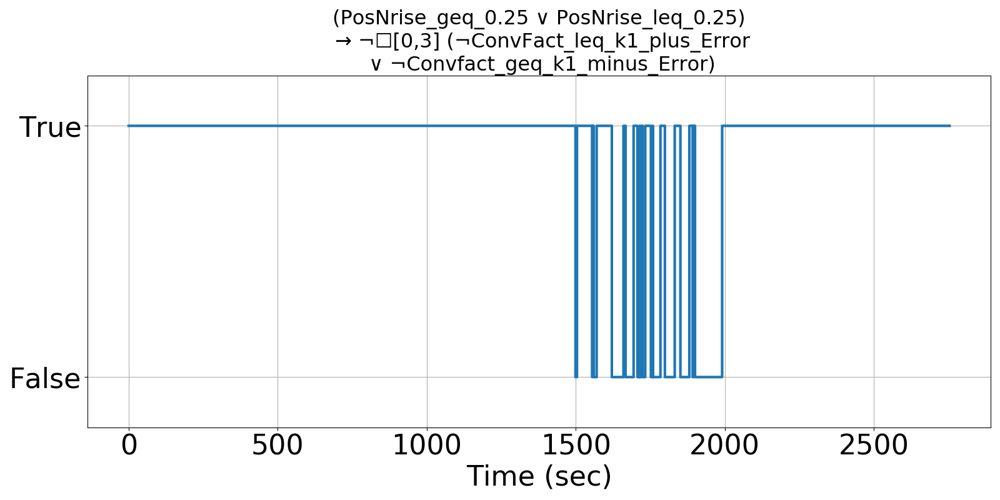

Integrating Runtime Verification into an
Automated UAS Traffic Management System
Matthew Cauwels, Abigail Hammer, Benjamin Hertz, Phillip H. Jones, Kristin Y. Rozier
This webpage contains supplementary specifications for "Integrating Runtime Verification into an
Automated UAS Traffic Management System" by M. Cauwels, A. Hammer, B. Hertz, P. H. Jones, and K. Y. Rozier
PM_UAS_3
Specification Description
The relationship between the Lat and the PosN measurements shall be directly proportional by factor k1. The error between these two should be less than ERROR_LAT_POSN. If it is outside these error bounds, then allow 3 timesteps for recovery
Signals Required
Lat, PosN
Boolean Conversion of Signals to Atomic Inputs
PosNrise = POSN - PREV_POSN
LatRise = LAT - PREV_LAT
ConvFact = PosNrise/LatRise
PosNrise_geq_0.25: PosNrise ≥ 0.25
PosNrise_leq_0.25: PosNrise ≤ -0.25
ConvFact_leq_k1_plus_Error: ConvFact ≤ k1 + ERROR_LAT_POSN
ConvFact_geq_k1_minus_Error: ConvFact ≥ k1 - ERROR_LAT_POSNMLTL Specification
(PosNrise_geq_0.25 ∨ PosNrise_leq_0.25) → ¬☐[0,3] (¬ConvFact_leq_k1_plus_Error ∨ ¬ConvFact_geq_k1_minus_Error)
Fault Explanation
The relationship between the Latitude and Position North is outside the error bounds and are too widely varied.
Additional Notes
k1 would have to be predefined and is mission dependent based on initial altitude. ERROR_LAT_POSN could be given a value like 25% of k1
Figures



